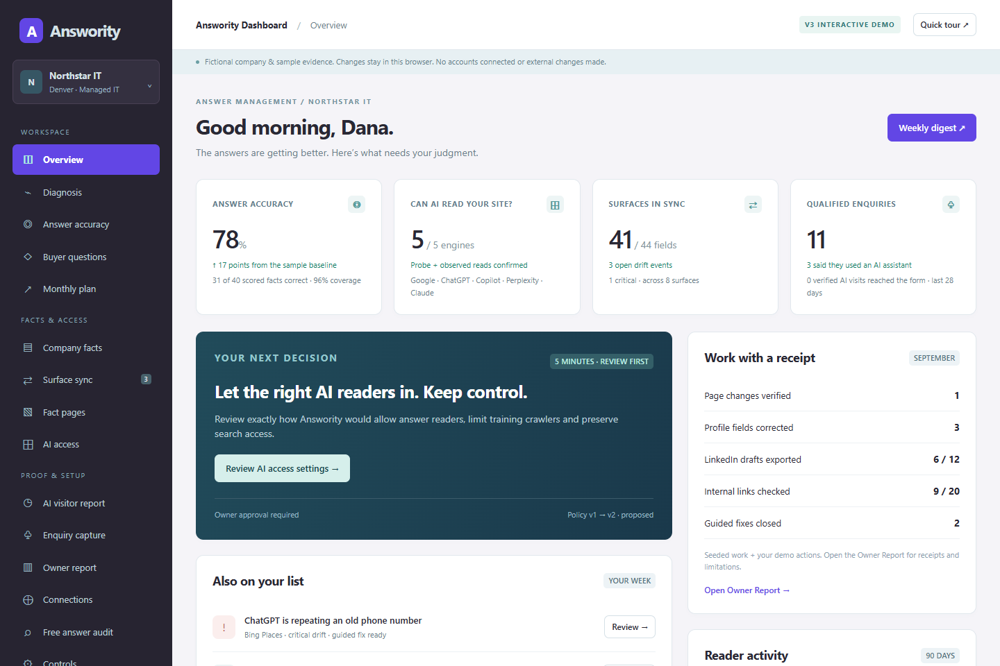

See the answer.
Find the gap.
Review buyer questions, cited sources and factual accuracy together. Know which answers deserve your attention.
Explore answer evidence →Buyers are asking AI who to trust. See what it says about your business, fix the facts that matter, and follow the path to an enquiry.
Northstar IT provides managed IT services for growing businesses in Denver.
Its support hours and service coverage aren’t clear from the available information.
Review support hours and service coverage.
Fictional business. Illustrative answers, not live AI responses.
A clearer view across the places buyers ask.
An AI answer can mention your name and still get your business wrong. Answority connects the answer, the underlying facts, and the work needed to improve them.
Review buyer questions, cited sources and factual accuracy together. Know which answers deserve your attention.
Explore answer evidence →Approve company information, review proposed page changes and check whether AI engines can access your website.
Open the company facts →Track reported discovery sources and qualified enquiries, with a clear distinction between evidence and attribution.
See enquiry reporting →From the first diagnosis to your next owner report.
Explore the working demo with a fictional managed IT business.

When buyers need expertise, the details count. What you do. Where you work. Who you help. And what makes you a good fit.
Our initial product preview focuses on managed IT providers. The same fact-first approach can help shape how other specialist service businesses communicate their expertise.
Explore the buyer question panel →What Answority is designed to do,
and what this preview can show.
Answority is a product concept for managing how a service business is understood in AI-generated answers. The preview brings together answer evidence, approved company facts, website access checks, proposed improvements and enquiry reporting.
This website and dashboard are interactive previews. Northstar IT, its metrics and all answer evidence are fictional. No AI engines, websites or CRM accounts are connected. Dashboard edits remain in your browser.
The focus extends beyond whether your name appears. The demo shows whether an answer describes your services accurately, which sources support it, what needs correcting and what enquiry evidence is available.
No. AI engines decide what to include in their answers. Accurate facts and accessible pages are useful inputs, but they do not guarantee inclusion, rankings or enquiries. The reporting is designed to make those limits visible.
The proposed workflow requires review and approval for changes. This preview simulates approvals and publishing without changing any external website.
For now, you can explore the interactive dashboard or open the example audit on this page. Booking and live audits are not enabled. No contact details are collected.